Sprites que se leen en 32 píxelesSprites that read at 32 pixels
Soy pixel artist y animador de sprites, con más de 700 horas en Aseprite. Diseño personajes y assets para videojuegos cuidando la silueta, la paleta y que todo el conjunto se vea del mismo mundo. Desde 2023 hago encargos; hoy no los busco de forma activa, pero sigo dibujando para mis juegos.
I'm a pixel artist and sprite animator with 700+ hours in Aseprite. I design characters and game assets with care for silhouette, palette and making the whole set feel like one world. I've taken commissions since 2023; I'm not actively looking for new ones, but I keep drawing for my games.
Chillotüm
Un universo completo a partir de la mitología chilota: cada criatura tiene su silueta propia en unos 32 píxeles, y todas comparten paleta y luz para que convivan en la misma pantalla.
A full cast drawn from Chiloé's mythology: every creature has its own silhouette in about 32 pixels, and they all share palette and lighting so they live on the same screen.
Pasa el mouse sobre cada personaje para verlo animado.
Hover over each character to see it animated.
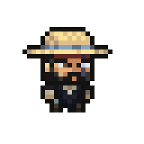
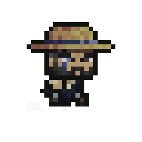
Chilote
32×32 · carrerarun
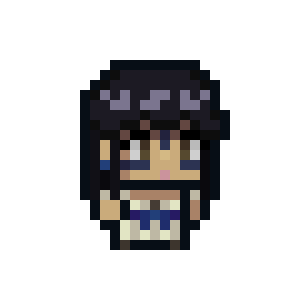
La hijaThe daughter
32×32
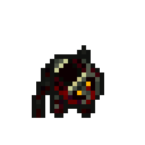
Imbunche
32×32 · ataqueattack
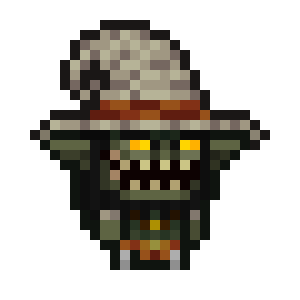
Trauco
32×32
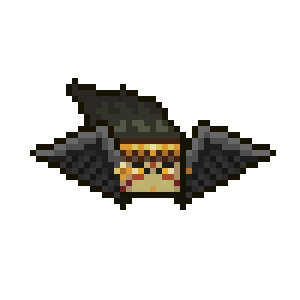
Tue-Tue
50×50 · vueloflight
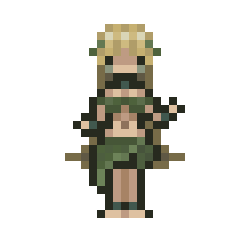
Pincoya
32×32 · bailedance
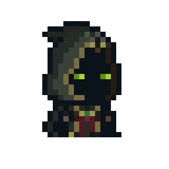
BrujoWarlock
32×32
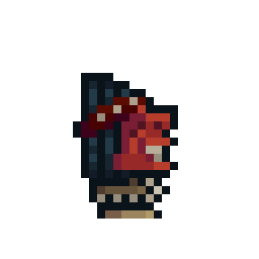
Indio Pícaro
32×32 · animaciónanimation
Del boceto a la versión finalFrom sketch to final
Cada personaje pasó por siete versiones o más: primero la forma, después la paleta y al final la luz.
Each character went through seven versions or more: shape first, then palette, then lighting.
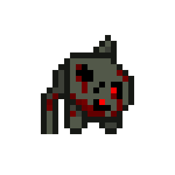
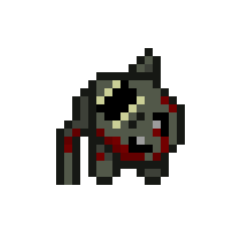
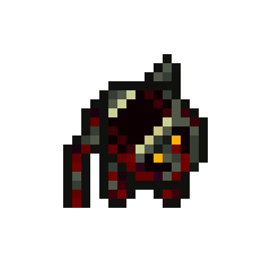
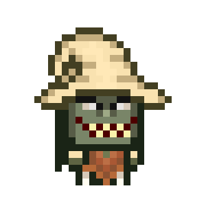
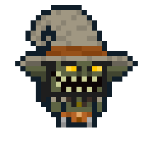
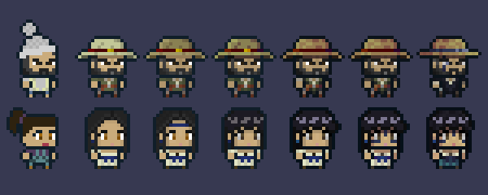
Assets del mundoWorld assets
Mucho volumen sin perder la coherencia: la misma paleta en árboles, animales, objetos, armas y comida.
A large set of assets that stays consistent: one palette across trees, animals, props, weapons and food.
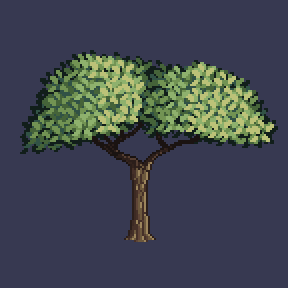
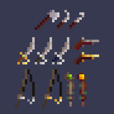
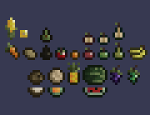
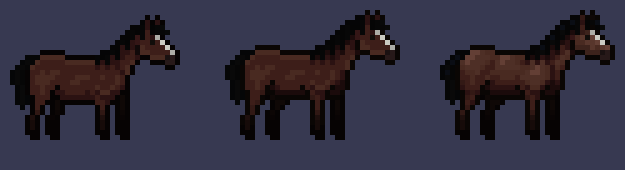
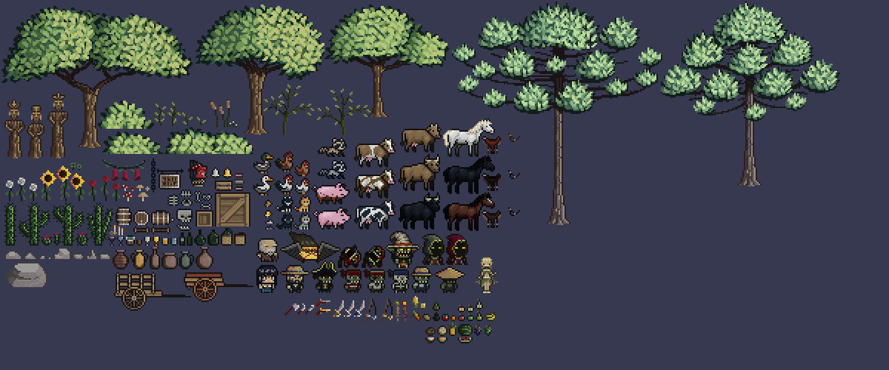
Encargo: corrección y pulido de animaciónCommission: animation polish
El cliente tenía un ciclo de carrera que se sentía flotante. Lo corregí dirección por dirección en cuatro entregas: mejor timing y peso, silueta más clara y una luz que le da volumen al sprite. Cada entrega incorporó su feedback de la anterior.
The client had a run cycle that felt floaty. I fixed it direction by direction over four deliveries: better timing and weight, a clearer silhouette and lighting that gives the sprite volume. Each delivery built on their feedback.
Son revisiones: arriba va mi versión corregida y abajo la original del cliente. Cada una tomó entre 1 y 2 horas.
These are revisions: my corrected version on top, the client's original below. Each took about 1 to 2 hours.
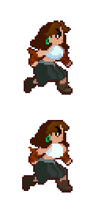
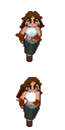
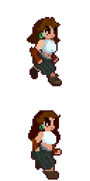
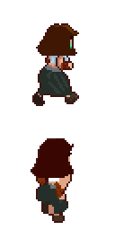
Otros proyectos de juegoOther game projects
Floor, Sir?
La mano del ascensorista en pantalla: un estado por cada acción (en reposo, alcanzando la palanca y agarrándola).
The elevator operator's on-screen hand: one state per action (resting, reaching for the lever and gripping it).
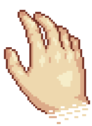
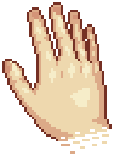
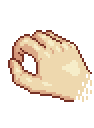
47×64 · HUD en primera personafirst-person HUD
Juego de clics griegoGreek clicker game
Íconos para un juego de clics de mitología griega: el tridente, la dracma y la balanza.
Icons for a Greek-mythology clicker game: the trident, the drachma and the scales.
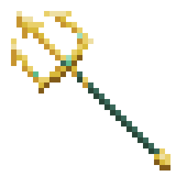
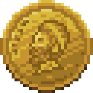
32×32 · íconos de interfazUI icons
Emotes para TwitchTwitch emotes
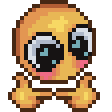
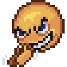
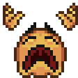
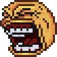
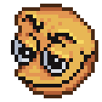
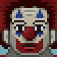
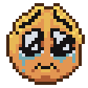
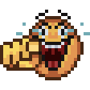
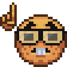
28×28 · mostrados a x3, cerca del tamaño en que se usanshown at x3, close to the size they are used at
Ilustración y fan artIllustration and fan art
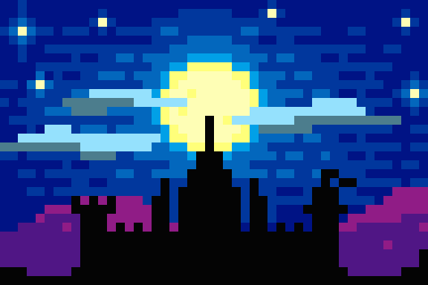
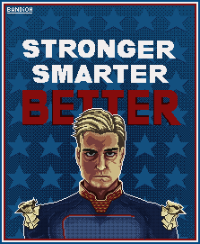
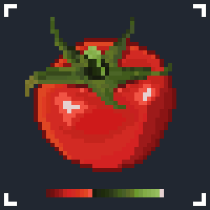
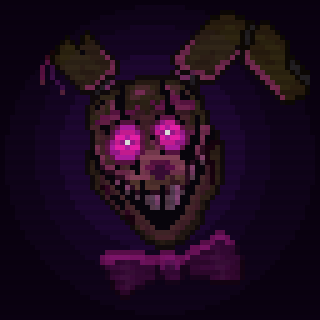
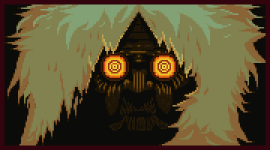
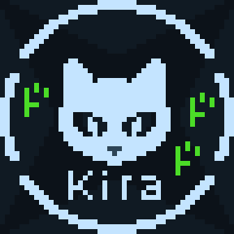
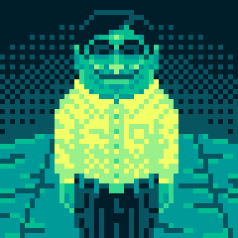
Sobre míAbout me
Soy Analista Programador titulado de INACAP y vivo en Santiago de Chile. Hago videojuegos como bandioh games, aplicaciones web que la gente usa a diario y pixel art desde 2023.
I'm a software developer with a Programmer Analyst degree from INACAP, based in Santiago, Chile. Since 2023 I've been making games as bandioh games, web apps people use every day, and pixel art.
Trabajo en ciclos cortos: construir, ponerlo en manos de alguien, mirar dónde se traba y corregir. Uso IA como herramienta de programación; el diseño, la escritura, el arte y las pruebas los dirijo yo.
I work in short cycles: build it, put it in someone's hands, watch where they get stuck and fix it. I use AI as a programming tool; I direct the design, writing, art and testing.
ContactoContact
¿Tienes un proyecto o un puesto en mente? Escríbeme.
Have a project or a role in mind? Get in touch.